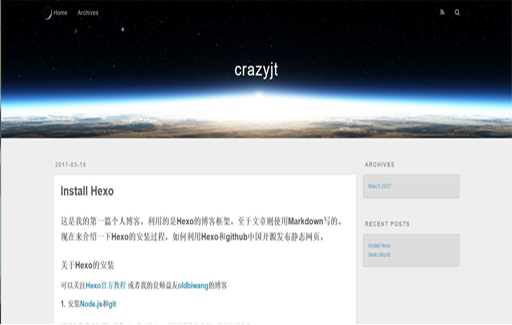
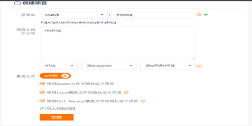
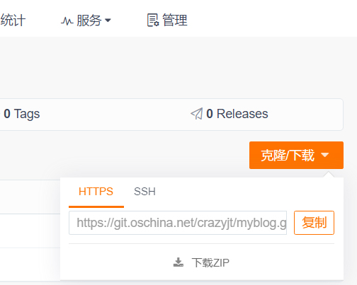
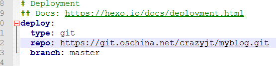
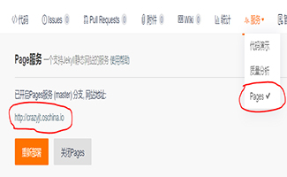
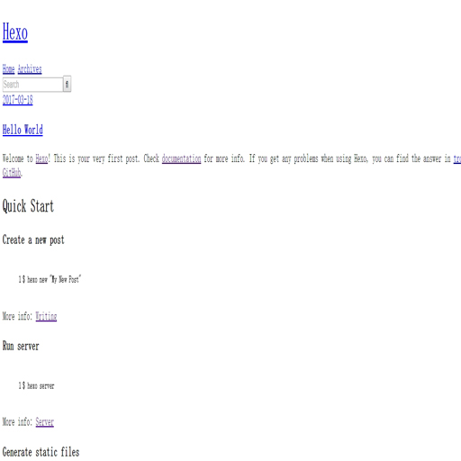

这是我的第一篇个人博客，利用的是Hexo的博客框架。至于文章则使用Markdown写的。现在来介绍一下Hexo的安装过程，如何利用Hexo和github中国开源发布静态网页。
关于Hexo的安装
可以关注Hexo官方教程 或者我的良师益友oldbiwang的博客
安装Hexo，打开git-Bash命令行，输入命令：
$ npm install -g hexo-cli安装Hexo之后，接着在git命令行中输入：
1
2
3
4
5
6
7
8
9
10
11
12
13$ hexo init folder
# folder是你选择的文件夹，hexo会在folder文件夹新建所需要的文件
$ cd folder
$ npm install
#之后会出现如下目录：
.
├── _config.yml
├── package.json
├── scaffolds
├── source
| ├── _drafts
| └── _posts
└── themes进入source资源文件，创建md文件，也就是博客文章文件。md全称markdown，提供一个markdown学习网址。
1
2cd source
$ hexo new 文件名
生成静态文件和部署文件：
1
2$ hexo g
$ hexo d接着，启动本地服务器：
1
2
3$ hexo s(或者是hexo server)
INFO Start processing
INFO Hexo is running at http://localhost:4000/. Press Ctrl+C to stop.打开浏览器输入地址
http://localhost:4000/，就可以看到你的网页了。
下面是我的主页：

到此为止，Hexo的安装和本地发布已经完成。
利用github开源中国发布博客
- 首先，需要去码云github中国注册一个帐号。（特别注意昵称和用户名都用英文小写，后面会讲解原因。）
- 接着，在码云创建一个新的项目，设置如下：

复制这里的https地址，后面需要：
 - 打开git客户端，输入命令，安装插件，用于将hexo部署到码云：
$ npm install hexo-deploy-git --save - 更改电脑Hexo安装目录下的_config.yml配置文件（建议下载Notepad++打开该文件，而且window系统的一般编辑文本之类的都用Nodepad++，因为系统自带的文本编辑会带来许多问题）：

这里的repo之后的内容就是前面在码云上复制的项目http地址。另外，yml的格式要求就是分号 : 后面要加一个空格。
- 接下来利用git开始部署hexo文件到码云：
$ hexo deploy
这时会弹出一个对话框，输入码云的账号密码。然后登录码云，可以看到你所建的项目里出现了本地hexo文件里public文件夹里的内容。 - 启动码云pages服务：

这个地址就是你的博客在码云上搭载的服务器地址，可以用浏览器打开该地址，就可以看到你的博客。
到此，利用hexo和码云发布博客也就完成了。至于发表博客，则可以在sourc的_posts文件夹下新建md格式的文件，然后可以通过markdown的编辑器进行编辑。 - 说明一下前面为何说码云的账户和昵称要用全部小写。博主本人就是因为用了一个包含大写字母的账号，结果将博客deploy上去码云之后，开启了pages服务，打开了那个链接，结果我的博客只有文字没有样式，但是在本地的localhost：4000访问又正常。贴一张一开始生成错误的博客的图片：

这个问题困扰了博主两天，最后是oldbiwang发现之后才解决的。。。
附上markdown编辑器的下载网址：
- window系统：Markdown Pad、MarkPad、GitHub Atom
- linux系统：ReText
- Mac系统：Mou
- 在线编辑器：Markable.in、简书